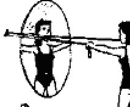
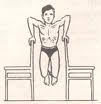

ИЗДАНИЕ 10
Прежде всего надо постараться выяснить причину вашей худобы.
У одних дефицит массы тела - следствие перенесенных тяжелых истощающих заболеваний: операций на органах желудочно-кишечного тракта, хронических заболеваний желудка, кишечника, поджелудочной железы, почек, глистной инвазии, у других - результат заболеваний центральной нервной системы, сопровождающихся потерей аппетита и даже полным отказом от пищи, страхом перед едой, тошнотой и рвотой при виде пищи.
Чрезмерная худощавость может быть обусловлена и конституциональными особенностями. Такие люди большей частью практически здоровы, хорошо себя чувствуют, трудоспособны, физически активны.
Причин, как видите, много, и дать единую для всех худых рекомендацию, как им пополнеть, весьма затруднительно. Поэтому советуем сначала обратиться к врачу, пройти, если это необходимо, обследование у эндокринолога, невропатолога, терапевта, гастроэнтеролога.
Дефицит массы тела, обусловленный заболеванием, требует активных лечебных мер. Другое дело, если он с ним не связан. В этом случае главное - питание и двигательная активность.
И придется проявить настойчивость, терпение, поскольку пополнеть труднее, чем похудеть.
Старайтесь, чтобы рацион был максимально разнообразным по набору продуктов. Он должен включать мясные, рыбные, молочные продукты, а также овощи, ягоды, фрукты, богатые витаминами, минеральными солями и микроэлементами, пектином и клеточными оболочками. В овощах, ягодах и фруктах содержатся органические кислоты и эфирные масла, способствующие повышению аппетита и стимуляции секреции пищеварительных желез желудка и кишечника, что, в свою очередь, обеспечивает лучшее переваривание и усвоение пищи.
Ешьте хлеб, булочки, пироги, макароны, пельмени. Однако это отнюдь не означает, что надо в основном перейти на эти блюда. Нередко причиной чрезмерной худощавости становится именно монодиета, обусловленная выработавшейся с детских лет привычкой к однообразному питанию: чаю с бубликами, сухариками, печеньем...
Надо сказать и еще об одной ошибке, которую допускают некоторые, стремясь пополнеть: они едят между делом то булочку, то конфету. Однако этим лишь отбивают аппетит и, садясь за стол, не съедают полного обеда, завтрака или ужина. Есть надо в одни и те же часы 4-5 раз в день и начинать еду с овощных, острых закусок, чтобы возбудить аппетит.
Лучше, если завтрак горячий: рыбное, мясное блюдо с гарниром или яичница, каша из любой крупы, приготовленная на молоке, белый и черный хлеб с маслом и сыром, сладкий чай с молоком (1/3 молока). Второй завтрак - стакан молока с печеньем или булочкой, фрукты. На обед закуска (салат, винегрет) или 100 граммов любого овощного, или фруктового, или ягодного сока, 1/2 порции супа, горячее мясное или рыбное блюдо с картофелем, овощами, а на десерт стакан сладкого компота, киселя.
В 17 часов можно выпить стакан шиповника и съесть булочку или печенье, а на ужин - горячую запеканку крупяную или лапшевник с творогом, чай. На ночь кефир, ряженка, ацидофилин или простокваша. Их можно заменить сладким киселем, компотом или соком, фруктами. По возможности больше включайте в рацион любимых блюд, ведь пища, съеденная с удовольствием, лучше усваивается.
Неправильно поступают те, кто считает, что скорее пополнеет, если будет больше лежать. Ничего, кроме дряблости мышц, лежебоки не приобретают! Активный двигательный режим стимулирует работу всех органов, в том числе и пищеварительных желез, в результате чего повышается аппетит. К тому же, если человек делает утреннюю зарядку, ходит на лыжах, плавает, катается на коньках, на велосипеде, он укрепляет и наращивает мышечную массу. Есть и специальные упражнения, выполнение которых позволяет добиться этой же цели.
Один из таких комплексов мы приводим.
КОМПЛЕКС УПРАЖНЕНИЙ
Заниматься можно в любое удобное для вас время, но не раньше чем через 3 часа после еды. Нагрузка рассчитана на практически здоровых людей. Тем, у кого имеются отклонения в состоянии здоровья, следует проконсультироваться со специалистами врачебно-физкультурного диспансера.
Для занятий потребуются резиновый бинт (амортизатор), гимнастическая палка, гантели весом 3-5 килограммов.
Темп выполнения упражнений для мышц груди, плечевого пояса и ног (упражнения 1-7) средний, для мышц талии и
брюшного пресса (упражнения 8-10) быстрый. Дыхание произвольное. Между упражнениями отдохните 1,5-2 минуты. Отдыхая, не сидите и не лежите. Походите, успокаивая дыхание.
В конце каждого упражнения даны цифры 3x8; 3x10:3x30. Например, в упражнении 1 - 3x10. Это значит, нужно выполнить упражнение трижды по 10 раз.
Для разминки потанцуйте под музыку 3-5 минут до появления ощущения приятного тепла в мышцах.

1. Исходное положение
(и. п.) - стоя, резиновый бинт
закреплен в руках, вытянутых
вперед на уровне груди. Разве
дение рук в стороны. 3X10.
2. И. п. - то же, но руки при
подняты чуть выше головы. Раз
ведение рук в стороны. 3x10.
3. И. п. - лежа на скамейке на
спине, бинт в руках на уровне
груди (бинт закреплен под ска
мьей). Жим лежа. 3x10.
4. И. п. - то же, но руки вытя
нуты вверх. Разведение рук в стороны. 3X10.
5. И. п. - стоя, гантели (3-5 кг) в руках у пояса. Приседа
ние на двух ногах, 3x10.
6. И. п. - то же, но гантели в руках за спиной. 3x10.
7. И. п. - стоя, носки ног на бруске толщиной 8-10 санти
метров. Подниматься на носки. 3x20.
8. И. п. - лежа на полу. Поднимать прямые ноги вверх и
опускать их за голову, стараясь носками коснуться пола.
3x10.
9. И. п.- лежа на полу, ноги закреплены. Поднимать ту
ловище, стараясь коснуться головой колен. 3x10.
10. И. п.- сидя на стуле, на пле
чах гимнастическая палка, руки вы
тянуты вдоль палки. Повороты туло
вища в стороны. 3x30.
К этому комплексу юноши должны добавить еще 2 упражнения.

1. Отжимание.
Поставьте 2 стула спинками друг к другу, встаньте между ними и, положив руки на спинки, опуститесь вниз. Ноги подогните. За счет силы рук вернитесь в и. п. 3x8.
2. Подтягивание широким (руки шире плеч (хватом на перекладине. 3x8.
Не смущайтесь, если не сможете подтянуться и одного раза. Главное, тянитесь к перекладине ровно и настойчиво в течение 3-4 секунд, И так 8 раз подряд. 3x8.
ЕЩЕ ОДНА ЭФФЕКТИВНАЯ МЕТОДИКА УВЕЛИЧЕНИЯ МАССЫ ТЕЛА
Сон. Необходимо увеличить продолжительность Вашего сна на 1,5-2 часа, желательно за счет вечерних часов
Обливание. Ежедневно обливайтесь холодной водой, с каждым днем увеличивая продолжительность процедуры и уменьшая температуру воды. Когда же Вы почувствуете, что спокойно переносите холодную воду, обтирайте тело льдом
Питание. Необходимо придерживаться общего режима питания, т. е. есть три раза в день, желательно в одно и тоже время. В течении дня Вы не должны испытывать чувство голода. В Вашем рационе обязательно должны присутствовать: сыр, простокваша, яйца, орехи, мед, шоколад.
Вот один из возможных рецептов: натереть одно яблоко, одну морковь, добавьте одну-две ложки орехов, ложку меда, половину стакана виноградного или лимонного сока. Все перемешайте и принимайте в промежутках между основными приемами пищи.
Другой рецепт: зерна пшеницы (ячменя, кукурузы) замочите в теплой воде.
Полученные таким образом проросшие зерна ешьте, тщательно пережевывая.
Третий рецепт: чайную ложку свежих дрожжей размешайте в стакане теплой воды или молока, добавьте сахар по вкусу. Напиток принимайте три раза в день во время еды. Еще один рецепт: каждый день принимайте детское питание, лучше отечественного производства, типа "Малыш", "Малютка" и т. п. Детскую дозу увеличьте в два раза.
А вот рецепт очень эффективного старинного средства (леченые этим средством очень быстро прибавили в весе): 300 гр. нутряного сала и шесть больших зеленых яблок (яблоки не очищать!) нарезать мелкими кусочками. перемешать и топить на очень медленном огне, следить, чтобы не пригорело. Затем взять двенадцать яичных желтков, растереть их со стаканом сахарного песка и добавить в них 300 гр. измельченного шоколада. Потом пропустить через сито смесь из сала и яблок, и смешать ее со смесью яиц и шоколада.
Дать смеси остыть. Приминайте эту смесь, намазывая ее на хлеб и запивая теплым молоком.
Уникальные издания.